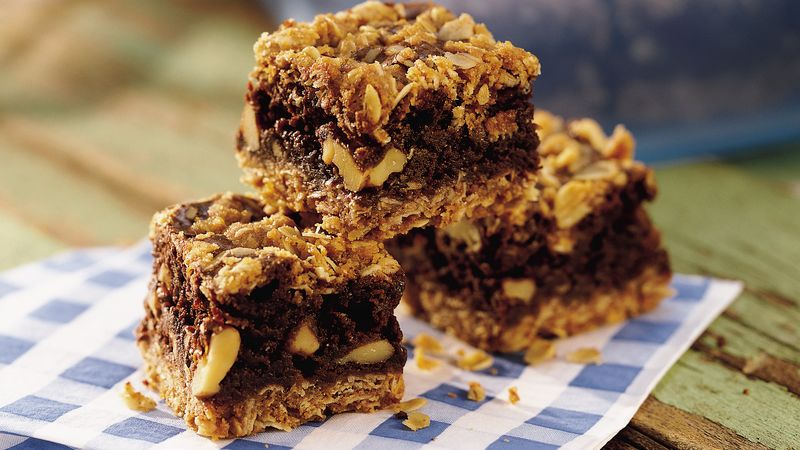

Oatmeal Brownie

Delicious and chewy brownies made of healthy ingredients
Ingredients
- 1 cup butter at room temperature
- 1 cup firmly packed light brown sugar
- 1 cup cacao powder
- 2 eggs
- 2 teaspoons vanilla extract
- ½ teaspoon salt
- 1 teaspoon baking soda
- 1 teaspoon baking powder
- 2 cups rolled oats
- ½ cup chocolate chips
- ½ cup raisins
- ½ cup chopped walnuts
- ½ cup chopped cashew nuts
Steps
- Preheat the oven to 350 degrees F (175 degrees C)
- Grease and flour a desire-sized baking pan
- Whisk the butter and brown sugar until thoroughly mixed and creamy
- Add the eggs one at a time
- Add vanilla extract, salt, baking powder and soda, flour, cacao powder, rolled oat, chocolate chip, raisins and chopped nuts
- Mix well and spread into the prepared baking pan
- Bake in the preheated oven for 20-25 minutes